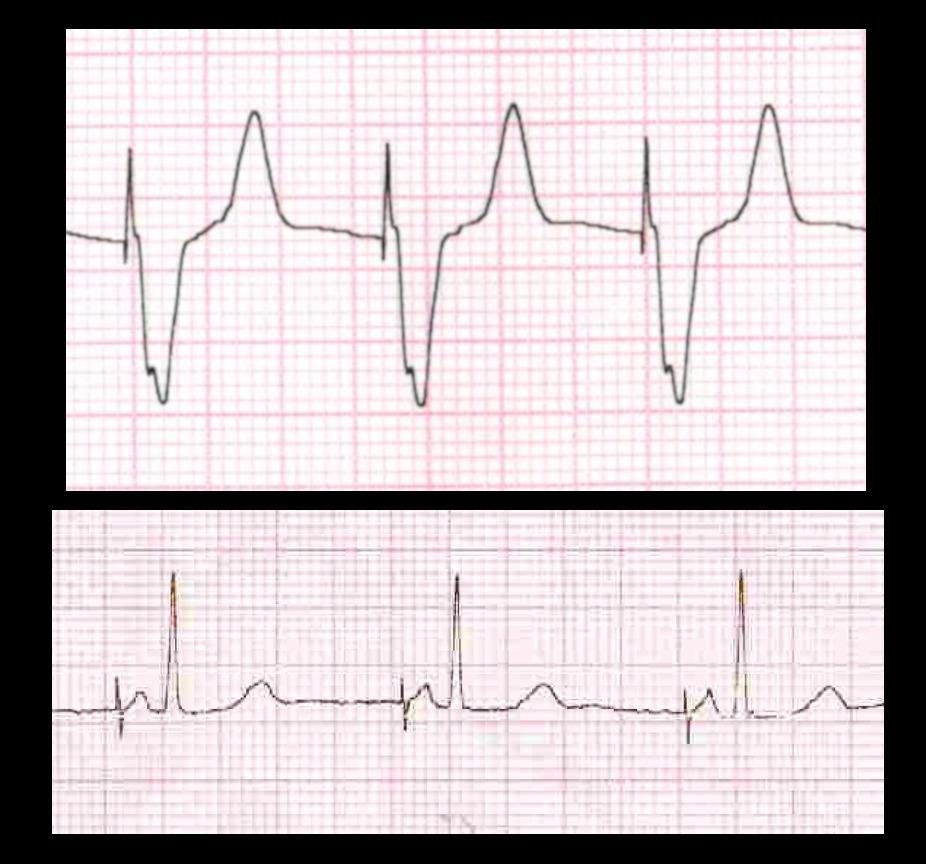

Pacemaker ECG - An introduction
Raja Selvaraj, JIPMER
Pacemaker ECG - Raja Selvaraj
General principles of pacemaker function
Pacing
- Delivers a rectangular electrical stimulus a timed intervals
- Seen as a high frequency pacing spike
- Followed by capture of the respective chamber
Pacing
Pacing

Unipolar / bipolar pacing
Sensing
- Watches for intrinsic activity
- Generally inhibits pacing (resets timer)
- For dual chamber pacemaker, sensing in atrium initiates pacing in ventricle after delay
Sensing
Sensing
Atrial pacing
Ventricular pacing
Pacing location - RVOT
Troubleshooting
Pacing spikes not seen
- Not pacing because intrinsic rate is faster than set lower rate
- Bipolar pacing - small spikes
- Lead malfunction
- Battery depletion
- Concern if rate is slow and patient is symptomatic
R wave in V1
- Normally LBBB pattern with RV pacing
- But sometimes an R wave may be seen in V1
- Can happen with LV pacing / septal perforation
- But more often occurs in presence of normal location
Example ECGs
History of pacemaker implanted 2 years back
Pacemaker implanted for complete heart block

Pacemaker implanted 2 weeks back, recurrent syncope
Summary
- Understanding basic functioning of pacemaker helps interpret ECGs
- Stepwise approach
- Identify device
- For each location - Pacing, sensing
- As in other situations, interpret in context of overall clinical findings